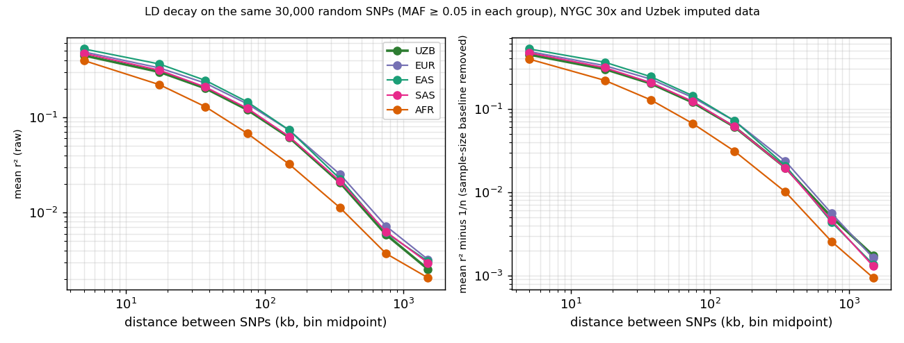

Step 13: LD Analysis
Genome-wide LD decay in the Uzbek cohort compared with the NYGC reference populations
✓ NYGC 30x reference, expanded cohort (1,256 samples) — rebuilt 2026-10-04 ← View original 1,047-sample cohort results (archived, not directly comparable on this page)1. Overview
Linkage disequilibrium (LD) is the non-random association between alleles at nearby variants, measured here as r² between pairs of SNPs. How fast it decays with distance reflects population history: effective population size, bottlenecks and admixture all leave a mark. This step characterises LD in the Uzbek cohort and compares it with the four NYGC reference groups on exactly the same SNPs.
2. Data and method
- Uzbek data: imputed, quality-filtered genotypes of the expanded cohort (
imputation_results/hq_filtered/UZB_imputed_HQ_qc, 1,256 samples, 5,358,770 variants) on DRAGEN. From its 3,298,098 single-nucleotide variants with Uzbek MAF ≥ 0.05, 30,000 were drawn at random (fixed seed, all chromosomes). - Reference data: the same 30,000 positions were extracted from the NYGC 30x GRCh38 VCFs (biallelic SNVs only) for EUR (633), EAS (585), SAS (601) and AFR (893). Each group was analysed separately.
- r²: PLINK 1.9
--r2 --ld-window-kb 2000 --ld-window 99999 --ld-window-r2 0, all SNP pairs on the same chromosome within 2 Mb, with--maf 0.05applied within each group. Pairs were binned by distance and r² averaged per bin. Because the SNP set is the same, differences between groups are not due to different sites; because MAF is filtered within each group, the pair sets overlap but are not identical. - Sample-size baseline: r² computed from n individuals has an expected value of about 1/n even for unlinked SNPs (0.0008 for n = 1,256; 0.0016 for n = 633). The second table subtracts 1/n from every mean so that groups of different size can be compared at long distance.
- Script
/staging/tmp/ld13.sh; output/staging/tmp/scratch/ld13_full/on DRAGEN (ld_bins.jsonand per-chromosome r² files); log/staging/tmp/ld13_full.out. It was toy-tested on chromosome 22 before the full run.
3. Results

Mean r² by distance, five groups, same 30,000 SNPs. Left: raw. Right: after subtracting the 1/n sample-size baseline.
Mean r² by distance (raw)
| Distance (kb) | UZB (n=1,256) | EUR (n=633) | SAS (n=601) | EAS (n=585) | AFR (n=893) |
|---|---|---|---|---|---|
| 0–10 | 0.4475 | 0.4875 | 0.4707 | 0.5238 | 0.3958 |
| 10–25 | 0.3001 | 0.3310 | 0.3130 | 0.3638 | 0.2206 |
| 25–50 | 0.2019 | 0.2287 | 0.2082 | 0.2446 | 0.1292 |
| 50–100 | 0.1203 | 0.1388 | 0.1247 | 0.1457 | 0.0680 |
| 100–200 | 0.0616 | 0.0735 | 0.0630 | 0.0738 | 0.0323 |
| 200–500 | 0.0205 | 0.0251 | 0.0212 | 0.0225 | 0.0112 |
| 500–1000 | 0.0058 | 0.0072 | 0.0063 | 0.0061 | 0.0037 |
| 1000–2000 | 0.0025 | 0.0032 | 0.0030 | 0.0031 | 0.0021 |
Mean r² minus 1/n
| Distance (kb) | UZB (n=1,256) | EUR (n=633) | SAS (n=601) | EAS (n=585) | AFR (n=893) |
|---|---|---|---|---|---|
| 0–10 | 0.4468 | 0.4860 | 0.4690 | 0.5221 | 0.3947 |
| 10–25 | 0.2993 | 0.3294 | 0.3113 | 0.3621 | 0.2195 |
| 25–50 | 0.2011 | 0.2272 | 0.2065 | 0.2429 | 0.1281 |
| 50–100 | 0.1195 | 0.1372 | 0.1231 | 0.1440 | 0.0669 |
| 100–200 | 0.0608 | 0.0719 | 0.0613 | 0.0721 | 0.0312 |
| 200–500 | 0.0197 | 0.0235 | 0.0196 | 0.0208 | 0.0101 |
| 500–1000 | 0.0050 | 0.0056 | 0.0046 | 0.0044 | 0.0026 |
| 1000–2000 | 0.0017 | 0.0016 | 0.0013 | 0.0014 | 0.0009 |
Number of SNP pairs per bin
| Distance (kb) | UZB (n=1,256) | EUR (n=633) | SAS (n=601) | EAS (n=585) | AFR (n=893) |
|---|---|---|---|---|---|
| 0–10 | 6,529 | 5,306 | 5,683 | 4,620 | 4,627 |
| 10–25 | 7,814 | 6,266 | 6,673 | 5,301 | 5,353 |
| 25–50 | 11,782 | 9,258 | 10,027 | 7,777 | 8,000 |
| 50–100 | 21,452 | 16,719 | 18,068 | 14,013 | 14,270 |
| 100–200 | 40,066 | 30,897 | 33,496 | 25,935 | 26,611 |
| 200–500 | 113,291 | 86,681 | 94,513 | 72,533 | 74,793 |
| 500–1000 | 178,913 | 136,992 | 149,493 | 113,141 | 118,019 |
| 1000–2000 | 354,824 | 271,366 | 297,534 | 226,753 | 237,337 |
Distance at which mean r² first falls below a threshold
| Group | < 0.2 | < 0.1 | < 0.05 | < 0.01 |
|---|---|---|---|---|
| UZB | 50–100 kb | 100–200 kb | 200–500 kb | 500–1000 kb |
| EUR | 50–100 kb | 100–200 kb | 200–500 kb | 500–1000 kb |
| SAS | 50–100 kb | 100–200 kb | 200–500 kb | 500–1000 kb |
| EAS | 50–100 kb | 100–200 kb | 200–500 kb | 500–1000 kb |
| AFR | 25–50 kb | 50–100 kb | 100–200 kb | 500–1000 kb |
4. Interpretation
- No excess long-range LD. At 1–2 Mb the baseline-corrected r² is 0.0017 for UZB, 0.0016 for EUR and 0.0013 for SAS: indistinguishable. Recent or ongoing admixture between differentiated sources would raise long-range LD above that of the parental groups; this is not seen in a 30,000-SNP sample. This does not rule out older admixture (generations ago LD between ancestry blocks has long since decayed) and it is not a date for it.
- Short-range LD in the Uzbek group is slightly lower than in EUR, SAS and EAS. The difference is about 5–15% (for example 0.448 vs 0.488 at 0–10 kb). Possible causes that this analysis cannot separate: a larger effective population size or mixed ancestry (more haplotype diversity), and the fact that the Uzbek genotypes are imputed from an array while the reference is sequencing-based (imputation errors lower r² at short distance). It should not be read as a population-history result by itself.
- The earlier version of this page reported r² = 0.207 in the first 50 kb bin and 0.069 in the next, from 3,000 SNPs with no MAF filter. The numbers are not comparable: rare SNPs have lower r², and this analysis keeps only SNPs with MAF ≥ 0.05 in each group (the corresponding 25–50 kb bin here is 0.202, the 50–100 kb bin 0.120).
5. What happened to the PBS-candidate LD analysis
| Earlier statement | Status now |
|---|---|
| “5 PBS candidates, 5 clumps, 0 pairs with r² ≥ 0.1: all independent loci” (expanded cohort); “8 candidates” (original cohort) | Withdrawn. The candidate SNPs come from the old 1000G reference file and are not differentiated on NYGC (see step10_pbs_candidates). The finding “independent loci” was true but uninformative: the sites are on different chromosomes or tens of Mb apart. |
| “LD decay: 0.207 → 0.069, background by 1,500 kb” | Replaced by the table above (different SNP set and MAF filter; see section 4). |
| “Pattern consistent with admixed Central Asian population history” | Not supported by this analysis: no excess long-range LD relative to EUR/SAS. See section 4. |
6. Limitations
- Imputed (Uzbek) versus sequenced (reference) genotypes are not equivalent; see section 4.
- The baseline correction uses the approximation E[r²] ≈ 1/n and ignores relatedness: the NYGC reference includes related individuals (not removed) while the Uzbek set went through the project’s own relatedness QC; unequal relatedness can shift LD estimates slightly.
- One random sample of 30,000 SNPs was analysed; the sampling error of the bin means was not estimated, but each bin contains thousands of pairs.
7. Next steps
- Step 14: FST & MDS — the pairwise FST matrix and its MDS.
- Step 15: ROH & IBD — runs of homozygosity and identity by descent.
ARCHIVED, not current: previous version of this page (clumping of PBS candidates, 3,000-SNP LD decay, August 2026). Candidate analysis withdrawn; do not cite.
1. Overview
To determine whether the 5 PBS candidate SNPs from Step 10 (expanded cohort) represent independent signals (rather than being in linkage disequilibrium with each other), we perform LD clumping. Additionally, we estimate genome-wide LD decay to characterize the extent of haplotype structure in the Uzbek population.
2. Prerequisites
| Input | Source | Description |
|---|---|---|
pbs_results/uzbek_specific_snps.tsv |
Step 10 | 5 PBS candidate SNPs (expanded cohort) |
UZB_1kG_merged.{bed,bim,fam} |
Step 8 | Merged dataset for LD reference (3,804 samples × 83,091 SNPs) |
UZB_imputed_HQ_qc.{bed,bim,fam} |
Step 7 | Uzbek QC-passed dataset for LD decay (1,256 samples × 5.36M SNPs) |
3. Pipeline
3.1 LD Clumping (Independent Loci)
Use PLINK’s clumping algorithm to group correlated PBS candidates. SNPs within ±1000 kb with r² ≥ 0.5 are merged into the same locus, with the highest-PBS SNP retained as the lead variant:
3.2 Pairwise LD Among Candidates
Compute pairwise r² among all 5 PBS candidates to verify independence. Only pairs with r² ≥ 0.1 within ±5000 kb are reported:
3.3 Genome-Wide LD Decay
To characterize background LD in the Uzbek population, we sample 3,000 random SNPs from the full QC-passed dataset and compute pairwise r² up to ±2 Mb, then bin into 50 kb windows:
4. Results
4.1 Independent Loci
| # | SNP | Chr | Position | PBSUZB | MAFUZB |
|---|
4.2 LD Decay
Mean r² by genomic distance (50 kb bins), computed from 3,000 sampled SNPs in the Uzbek QC-passed dataset (1,256 samples, expanded cohort):
| Distance (kb) | Mean r² | Pair Count |
|---|
5. Output Files
| File | Description |
|---|---|
pbs_clumped.clumped | PLINK clump output (independent lead variants + proxy lists) |
pbs_ld.ld | Pairwise r² among PBS candidate SNPs |
ld_decay.ld | Raw pairwise r² for 3,000 sampled SNPs |
ld_decay_binned.tsv | Binned LD decay curve (50 kb windows) |
ld_data.json | All LD results compiled for visualization |
6. Next Steps
- Step 14: Fst & MDS — Pairwise FST matrix and multidimensional scaling across all populations.
- Step 15: ROH & IBD — Runs of homozygosity and identity-by-descent analysis.